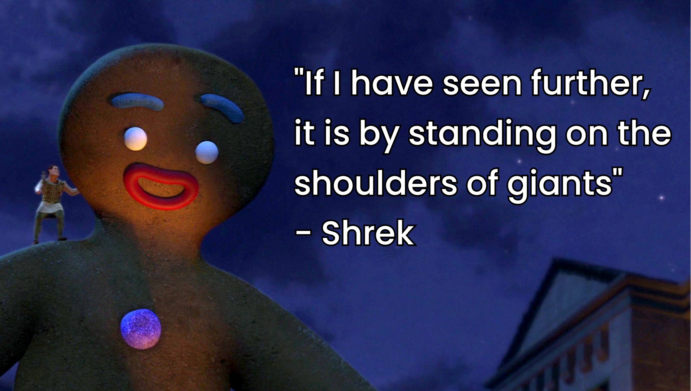

Resources
What is this?
Here are a bunch of resources that might be handy for somebody looking to get into philosophy/political theory, or generally interested in the content I’ve put on Rogue Analysis (okay plan to put on Rogue Analysis). It isn’t meant to be exhaustive, just stuff I’ve personally found useful.
CAVEATS:
I have yet to use some of these resources fully, but they seem useful to share
This page may be a bit of a “living document”, so potentially there will be changes
Possibly not even worth saying, but none/some/all of this may or may not be helpful
In any case:

Workflow
I am trying to sort all my tools out now so I can just focus on reading/writing without unnecessary headaches. I vacillate between thinking I should just return to pen + paper or use fancy tools because they might have cool epistemic benefits. You can skip this part if you’re happy with your set up.
Plain Text?
I hadn’t really given my workflow much thought until recently. After a bit of browsing I came across “The Plain Person’s Guide to Plain Text Social Science.” by Kieran Healy. This is addressed at new grad students deciding what software to use for their work. Healy makes the case for using tools that “give you more control over the process of data analysis and writing”. This seems like a good idea.
Now I’m not following this guide to the letter, but its convinced me to implement some decent version control, use open source tools where possible, and write papers in markdown for easier formatting. Worth a look, but no use upending your workflow if you have a system that works for you.
Taking Notes
Okay a confession - I do not have a good set up for digital note taking. I want to experiment a bit and see what works. Maybe it seems ridiculous that I haven’t sorted this out yet, but there are umpteen note taking apps that do cool things and could help me out.
Generally I want to move to some kind of plain text set up because it enables a focus on content rather than format, would enable easy conversion to other formats, and allow for easy version control. See here for some benefits of plain text notes. Currently I’m messing with some horrible mix of:
OneNote (not plain text)
Simplenote
Obsidian
GitJournal
Grad School in Philosophy/Political Theory
Mentoring
The Minorities and Philosophy UK branch offer a mentoring scheme for marginalised people in academic philosophy. This is for any UK philosophy student or researcher who consider themselves to be members of a marginalised group.
Networks
It can be helpful to join some philosophy networks to stay in the loop for papers/discussions/developments/conferences. I’ve found these networks to be useful:
Philosophy twitter
The community being created by the wonderful people at Philosophy Exchange
Philosophy Grad School Tips
We’ll see how well this pans out, but I came across these two pieces that gave me suggestions to consider and a bit of reassurance:
12 Tips for Success in Philosophy Graduate School - Liz Jackson
6 Tips for Graduate Political Theory Students - Bruno Leipold
Data Visualisation
Websites
Some great sources for R visuals:
R Graph Gallery - great examples and ideas. Absolutely brilliant site that taught me a lot
Data to Viz- even more great ideas and examples
htmlwidgets for R - cool interactivey stuff
and D3/Observable:
Observable (how do more people not use this?)
Books
Videos
Making a Website
I made this website using Quarto, Github, and Netlify. I found these resources useful to get going:
Creating a blog with Quarto in 10 steps - Beatriz Milz
The ultimate guide to starting a Quarto blog - Albert Rapp